V6: Sensitivity Analysis
Vignette 6 of 8 · Compare to An approach to sensitivity analysis by Gerko Vink and Stef van Buuren
This walkthrough mirrors the official R **mice** tutorials in Python. Deterministic tables and formulas are checked against the R reference; stochastic imputations and plots are labelled when they may differ.
What PyMICE does differently from R
- Default randomness uses NumPy (
rng="numpy"), so imputed values may differ from R unless you setrng="r". - Categorical factors are often shown as numeric codes in console output.
- Diagnostic figures use matplotlib instead of lattice (same intent, different styling).
- See REPRODUCIBILITY.md for exact replication options.
Parity details (maintainers)
Expected to match exactly
Checked against reference/06_sensitivity_analysis/vignette_extracted.R:
- Step 2 —
nrow(leiden)→ 956 - Step 3 —
mice(leiden, maxit=0)$nmismissing-count table - Step 4 —
flux()table for all variables;md.patternpattern count - Step 6 —
delta <- c(0, -5, -10, -15, -20)
- Steps 11–13 —
with_mids()+leiden_coxph()(lifelines strata) +pool(); goldens refreshed viaregenerate_v06_goldens.py(2026-07-05) - Step 13 — mammalsleep δ qbar table via
run_v06_mammalsleep_delta_chain()
Expected to differ (RNG / rendering)
- Step 1 — package load; no R console output to compare.
- Step 2 —
summary(leiden),head()/tail()layout (R row names ontail; float formatting). - Step 4 — full
md.patterntable whitespace;fluxplot()matplotlib chart. - Step 5 — Kaplan–Meier matplotlib curves (matplotlib equivalent).
- Steps 7–10 — δ scenarios via
run_v06_leiden_delta_chain()(rng='r',seed=i); diagnostic plots for δ=0 and δ=-20.
Introduction
This is the last vignette in the series.
The focus of this document is on sensitivity analysis in the context of missing data. The goal of sensitivity analysis is to study the influence that violations of the missingness assumptions have on the obtained inference.
The Leiden data set
The Leiden data set is a subset of 956 members of a very old (85+) cohort in Leiden. Multiple imputation of this data set has been described in Boshuizen et al (1998), Van Buuren et al (1999) and Van Buuren (2012), chapter 7.
The main question is how blood pressure affects mortality risk in the oldest old. We have reasons to mistrust the MAR assumption in this case. In particular, we worried whether the imputations of blood pressure under MAR would be low enough. The sensitivity analysis explores the effect of artificially lowering the imputed blood pressure by deducting an amount of δ from the values imputed under MAR. In order to preserve the relations between the variables, this needs to be done during the iterations.
Unfortunately we cannot share the Leiden data set with you. But we detail the approach below.
1. Load packages
Note: Package load step; no console output.
import numpy as np
from pymice import mice, md_pattern
from pymice.diagnostics.flux import flux
from pymice.diagnostics.plots import plot_flux, plot_bwplot_grid, plot_density, plot_xy_by_imp
from lib.data import load_leiden
from lib.viz import save_figure
from lib.r_style import (
format_summary_r,
format_dataframe_r,
format_md_pattern_r,
format_flux_r
)(setup — no console output)Compare to R reference
set.seed(123)
library("mice")
library("lattice")
library("survival")We choose seed value 123 for reproducibility in the PyMICE walkthrough below.
2. Inspect leiden data
Note: Numeric summaries match; R includes factor-style labels for some columns.
print(format_summary_r(data, names)) sexe
Min. : 0.00
1st Qu.: 0.00
Median : 0.00
Mean : 0.27
3rd Qu.: 1.00
Max. : 1.00
lftanam
Min. : 85.48
1st Qu.: 87.50
Median : 89.07
Mean : 89.78
3rd Qu.: 91.52
Max. : 103.54
rrsyst
Min. : 90.00Compare to R reference
summary(leiden) sexe lftanam rrsyst rrdiast
Min. :0.0000 Min. : 85.48 Min. : 90.0 Min. : 50.00
1st Qu.:0.0000 1st Qu.: 87.50 1st Qu.:135.0 1st Qu.: 75.00
Median :0.0000 Median : 89.07 Median :150.0 Median : 80.00
Mean :0.2709 Mean : 89.78 Mean :152.9 Mean : 82.78
3rd Qu.:1.0000 3rd Qu.: 91.52 3rd Qu.:170.0 3rd Qu.: 90.00
Max. :1.0000 Max. :103.54 Max. :260.0 Max. :140.00
NA's :121 NA's :126
dwa survda alb chol
Min. :0.0000 Min. : 2.0 Min. :21.00 Min. : 2.700
1st Qu.:0.0000 1st Qu.: 534.8 1st Qu.:39.00 1st Qu.: 4.800
Median :0.0000 Median :1196.5 Median :41.00 Median : 5.700
Mean :0.2437 Mean :1195.4 Mean :40.77 Mean : 5.704
3rd Qu.:0.0000 3rd Qu.:1889.0 3rd Qu.:43.00 3rd Qu.: 6.400
Max. :1.0000 Max. :2610.0 Max. :52.00 Max. :10.900
NA's :229 NA's :232
mmse woon
Min. : 1.00 Min. :0.000
1st Qu.:21.00 1st Qu.:0.000
Median :26.00 Median :3.000
Mean :23.67 Mean :1.775
3rd Qu.:29.00 3rd Qu.:3.000
Max. :30.00 Max. :4.000
NA's :85print(g('06', 2, 2))'data.frame': 956 obs. of 10 variables:
$ sexe : num 0 0 0 0 0 0 0 1 1 0 ...
$ lftanam: num 87.8 87.8 89.1 90.3 87.8 ...
$ rrsyst : num 160 140 155 155 110 120 180 135 130 160 ...
$ rrdiast: num 100 70 85 90 60 80 75 80 60 90 ...
$ dwa : num 0 0 0 0 0 0 0 0 0 0 ...
$ survda : num 1082 27 1604 528 1100 ...
$ alb : num 41 NA 41 44 37 NA 42 NA 45 46 ...
$ chol : num 4.4 NA 4.6 3.9 5.3 NA 7.2 NA 5.1 6.5 ...
$ mmse : num 12 9 25 27 14 NA 28 26 30 14 ...
$ woon : num 4 3 0 1 0 3 3 0 4 4 ...Compare to R reference
str(leiden)'data.frame': 956 obs. of 10 variables:
$ sexe : num 0 0 0 0 0 0 0 1 1 0 ...
$ lftanam: num 87.8 87.8 89.1 90.3 87.8 ...
$ rrsyst : num 160 140 155 155 110 120 180 135 130 160 ...
$ rrdiast: num 100 70 85 90 60 80 75 80 60 90 ...
$ dwa : num 0 0 0 0 0 0 0 0 0 0 ...
$ survda : num 1082 27 1604 528 1100 ...
$ alb : num 41 NA 41 44 37 NA 42 NA 45 46 ...
$ chol : num 4.4 NA 4.6 3.9 5.3 NA 7.2 NA 5.1 6.5 ...
$ mmse : num 12 9 25 27 14 NA 28 26 30 14 ...
$ woon : num 4 3 0 1 0 3 3 0 4 4 ...Note: Values match; R console spacing and float width differ slightly.
print(format_dataframe_r(data[:6], names)) 1 0 87.8 160.0 100.0 0 1082.0 41 4.4 12 4
2 0 87.75 140.0 70 0 27 NA NA 9 3
3 0 89.08 155.0 85 0 1604.0 41 4.6 25 0
4 0 90.29 155.0 90 0 528.0 44 3.9 27 1
5 0 87.76 110.0 60 0 1100.0 37 5.3 14 0
6 0 91.39 120.0 80 0 5 NA NA NA 3Compare to R reference
head(leiden) sexe lftanam rrsyst rrdiast dwa survda alb chol mmse woon
1 0 87.80 160 100 0 1082 41 4.4 12 4
2 0 87.75 140 70 0 27 NA NA 9 3
3 0 89.08 155 85 0 1604 41 4.6 25 0
4 0 90.29 155 90 0 528 44 3.9 27 1
5 0 87.76 110 60 0 1100 37 5.3 14 0
6 0 91.39 120 80 0 5 NA NA NA 3Note: R tail() preserves original row names (1229+); CSV uses 1..956.
print(format_dataframe_r(data[-6:], names)) 1 1 93.85 130.0 70 0 523.0 40 5.3 28 0
2 0 92.2 190.0 90 0 1182.0 44 5.8 26 3
3 0 95.02 150.0 80 0 861.0 35 5 28 0
4 0 88.3 120.0 60 0 129.0 42 8.6 21 0
5 1 89.02 140.0 80 0 374.0 40 5.2 23 0
6 0 85.7 130.0 65 0 1744.0 36 7.2 27 3Compare to R reference
tail(leiden) sexe lftanam rrsyst rrdiast dwa survda alb chol mmse woon
1229 1 93.85 130 70 0 523 40 5.3 28 0
1230 0 92.20 190 90 0 1182 44 5.8 26 3
1232 0 95.02 150 80 0 861 35 5.0 28 0
1233 0 88.30 120 60 0 129 42 8.6 21 0
1235 1 89.02 140 80 0 374 40 5.2 23 0
1236 0 85.70 130 65 0 1744 36 7.2 27 33. Dry run missing counts
imp0 = mice(data, column_names=names, maxit=0, m=1, seed=123)
print(format_nmis_r(names, imp0.nmis, split_name='mmse')) sexe lftanam rrsyst rrdiast dwa survda alb chol mmse
0 0 121 126 0 0 229 232 85
woon
0Compare to R reference
ini <- mice(leiden, maxit = 0)
ini$nmis sexe lftanam rrsyst rrdiast dwa survda alb chol mmse
0 0 121 126 0 0 229 232 85
woon
0There are 121 missings (NA's) for rrsyst, 126 missings for rrdiast, 229 missings for alb, 232 missings for chol and 85 missing values for mmse.
4. Pattern and flux plots
print(format_md_pattern_r(mp)) sexe lftanam survda dwa woon mmse rrsyst rrdiast alb chol
621 1 1 1 1 1 1 1 1 1 1 0
2 1 1 1 1 1 1 1 1 1 0 1
1 1 1 1 1 1 1 1 1 0 1 1
149 1 1 1 1 1 1 1 1 0 0 2
2 1 1 1 1 1 1 1 0 1 1 1
2 1 1 1 1 1 1 1 0 0 0 3
72 1 1 1 1 1 1 0 0 1 1 2
2 1 1 1 1 1 1 0 0 1 0 3
20 1 1 1 1 1 1 0 0 0 0 4
21 1 1 1 1 1 0 1 1 1 1 1
36 1 1 1 1 1 0 1 1 0 0 3
1 1 1 1 1 1 0 1 0 0 0 4
7 1 1 1 1 1 0 0 0 1 1 3
20 1 1 1 1 1 0 0 0 0 0 5
0 0 0 0 0 85 121 126 229 232 793Compare to R reference
md.pattern(leiden) sexe lftanam dwa survda woon mmse rrsyst rrdiast alb chol
621 1 1 1 1 1 1 1 1 1 1 0
2 1 1 1 1 1 1 1 1 1 0 1
1 1 1 1 1 1 1 1 1 0 1 1
149 1 1 1 1 1 1 1 1 0 0 2
2 1 1 1 1 1 1 1 0 1 1 1
2 1 1 1 1 1 1 1 0 0 0 3
72 1 1 1 1 1 1 0 0 1 1 2
2 1 1 1 1 1 1 0 0 1 0 3
20 1 1 1 1 1 1 0 0 0 0 4
21 1 1 1 1 1 0 1 1 1 1 1
36 1 1 1 1 1 0 1 1 0 0 3
1 1 1 1 1 1 0 1 0 0 0 4
7 1 1 1 1 1 0 0 0 1 1 3
20 1 1 1 1 1 0 0 0 0 0 5
0 0 0 0 0 85 121 126 229 232 793Note: Matplotlib equivalent of the R lattice plot.
fx = flux(data, names)
plot_flux(fx)(plot below)Compare to R reference
fx <- fluxplot(leiden)Variables with higher outflux are (potentially) the more powerful predictors. Variables with higher influx depend stronger on the imputation model. When points are relatively close to the diagonal, it indicates that influx and outflux are balanced.
The variables in the upper left corner have the more complete information, so the number of missing data problems for this group is relatively small. The variables in the middle have an outflux between 0.5 and 0.8, which is small. Missing data problems are thus more severe, but potentially this group could also contain important variables. The lower (bottom) variables have an outflux with 0.5 or lower, so their predictive power is limited. Also, this group has a higher influx, and, thus, depend more highly on the imputation model.
print(format_flux_r(fx)) pobs influx outflux ainb aout fico
sexe 1.0000000 0.00000000 1.0000000 0.0000000 0.09216643 0.3504184
lftanam 1.0000000 0.00000000 1.0000000 0.0000000 0.09216643 0.3504184
rrsyst 0.8734310 0.09798107 0.5573770 0.7887971 0.05881570 0.2562874
rrdiast 0.8682008 0.10231550 0.5422446 0.7910053 0.05756359 0.2518072
dwa 1.0000000 0.00000000 1.0000000 0.0000000 0.09216643 0.3504184
survda 1.0000000 0.00000000 1.0000000 0.0000000 0.09216643 0.3504184
alb 0.7604603 0.19311053 0.2471627 0.8214459 0.02995568 0.1458047
chol 0.7573222 0.19573400 0.2383354 0.8218391 0.02900552 0.1422652
mmse 0.9110879 0.06798221 0.6796974 0.7790850 0.06875877 0.2870264
woon 1.0000000 0.00000000 1.0000000 0.0000000 0.09216643 0.3504184Compare to R reference
fx pobs influx outflux ainb aout fico
sexe 1.0000000 0.00000000 1.0000000 0.0000000 0.09216643 0.3504184
lftanam 1.0000000 0.00000000 1.0000000 0.0000000 0.09216643 0.3504184
rrsyst 0.8734310 0.09798107 0.5573770 0.7887971 0.05881570 0.2562874
rrdiast 0.8682008 0.10231550 0.5422446 0.7910053 0.05756359 0.2518072
dwa 1.0000000 0.00000000 1.0000000 0.0000000 0.09216643 0.3504184
survda 1.0000000 0.00000000 1.0000000 0.0000000 0.09216643 0.3504184
alb 0.7604603 0.19311053 0.2471627 0.8214459 0.02995568 0.1458047
chol 0.7573222 0.19573400 0.2383354 0.8218391 0.02900552 0.1422652
mmse 0.9110879 0.06798221 0.6796974 0.7790850 0.06875877 0.2870264
woon 1.0000000 0.00000000 1.0000000 0.0000000 0.09216643 0.3504184In the next steps we are going to impute rrsyst and rrdiast under two scenarios: MAR and MNAR. We will use the delta adjustment technique described in paragraph 7.2.3 in Van Buuren (2012)
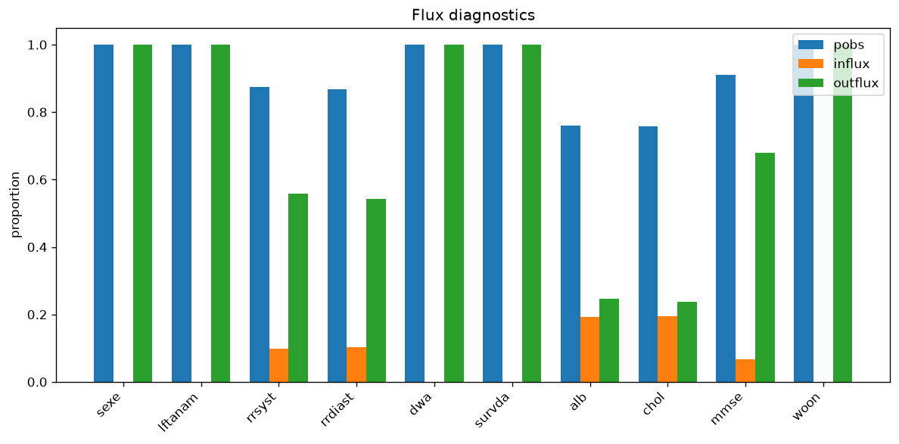
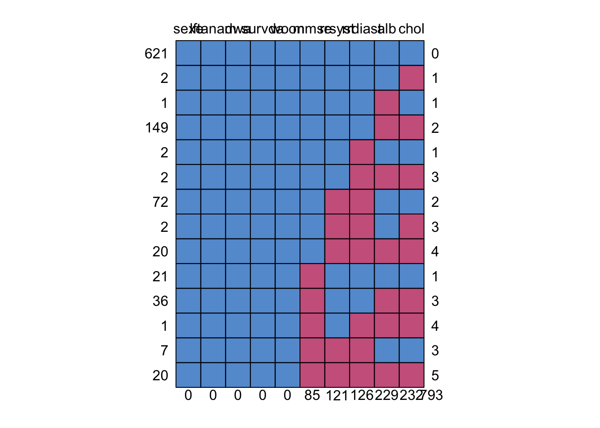
5. Kaplan–Meier by missingness
Note: Matplotlib Kaplan–Meier curves by rrsyst missingness.
time = data[:, surv_i] / 365.0
event = 1.0 - data[:, dwa_i]
plot_km_missing(time, event, np.isnan(data[:, rrs_i]))(plot below)Compare to R reference
km <- survfit(Surv(survda/365, 1-dwa) ~ is.na(rrsyst), data = leiden)
plot(km,
lty = 1,
lwd = 1.5,
xlab = "Years since intake",
ylab = "K-M Survival probability", las=1,
col = c(mdc(4), mdc(5)),
mark.time = FALSE)
text(4, 0.7, "BP measured")
text(2, 0.3, "BP missing")In the next steps we are going to impute rrsyst and rrdiast under two scenarios: MAR and MNAR. We will use the delta adjustment technique described in paragraph 7.2.3 in Van Buuren (2012)
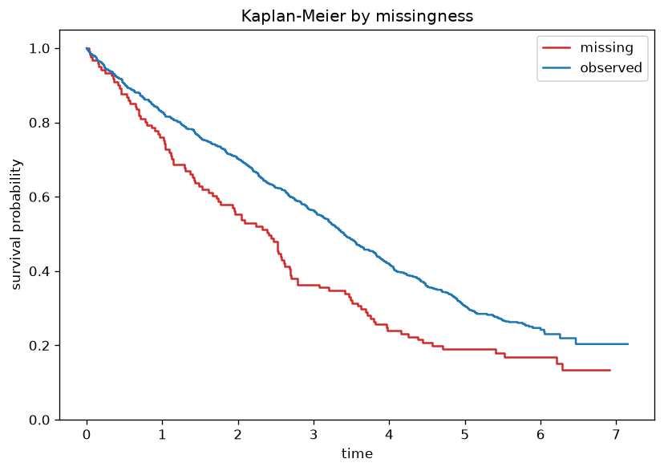
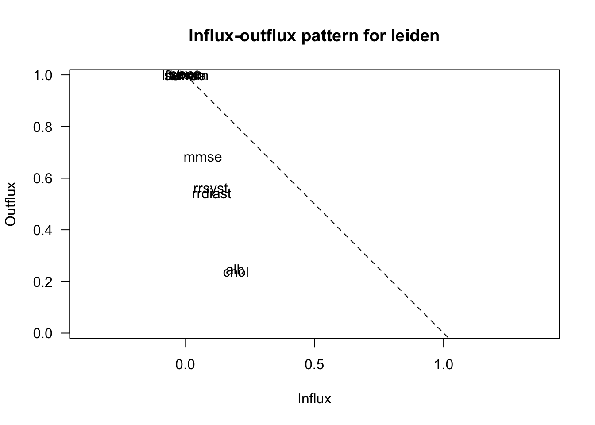
6. Delta adjustment vector
delta = [0, -5, -10, -15, -20]
print(' '.join(str(d) for d in delta))0 -5 -10 -15 -20Compare to R reference
delta <- c(0, -5, -10, -15, -20)The recipe for creating MNAR imputations for δ ≠ 0 uses the post-processing facility of mice. This allows to change the imputations on the fly by deducting a value of δ from the values just imputed.
7. Delta-adjusted imputation
Note: δ chain via run_v06_leiden_delta_chain() (rng='r', seed=i); no R console output.
imp_all = []
for i, d in enumerate(delta):
imp_all.append(mice(data, column_names=names, post={'rrsyst': post_add(d)}, m=5, maxit=5, seed=i+1))created 5 delta scenariosCompare to R reference
imp.all <- vector("list", length(delta))
post <- ini$post
for (i in 1:length(delta)){
d <- delta[i]
cmd <- paste("imp[[j]][,i] <- imp[[j]][,i] +", d)
post["rrsyst"] <- cmd
imp <- mice(leiden, post = post, maxit = 5, seed = i, print = FALSE)
imp.all[[i]] <- imp
}8. Boxplot blood pressure
Note: Matplotlib equivalent of the R lattice plot.
plot_bwplot_grid(imp_all[0])(plot below)Compare to R reference
bwplot(imp.all[[1]])Note: δ=-20 scenario (imp.all[[5]] in R).
plot_bwplot_grid(imp_all[4])(plot below)Compare to R reference
bwplot(imp.all[[5]])We can clearly see that the adjustment has an effect on the imputations for rrsyst and, thus, on those for rrdiast.
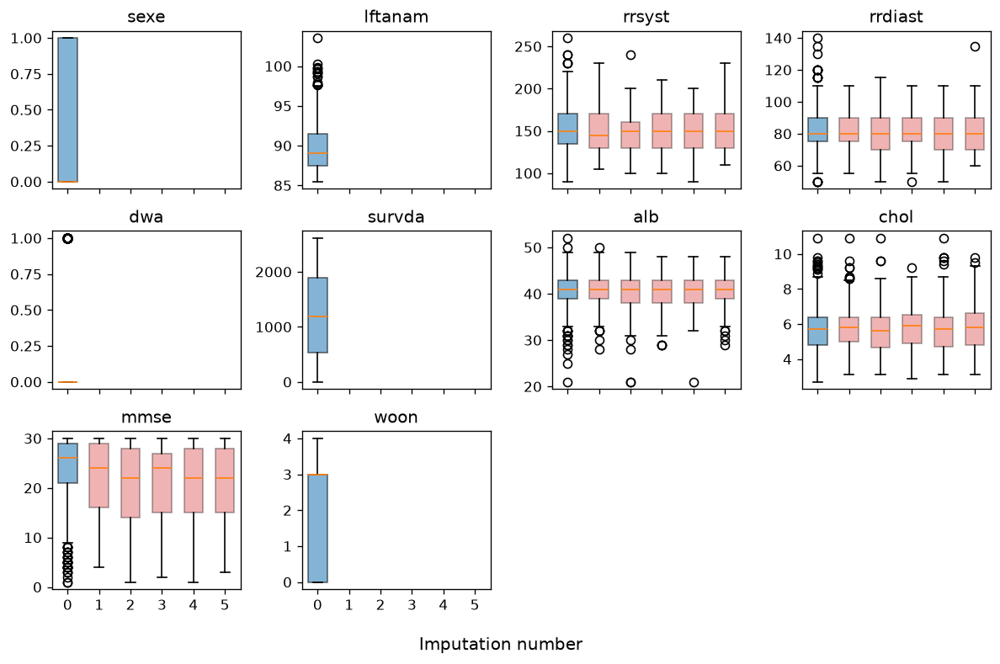
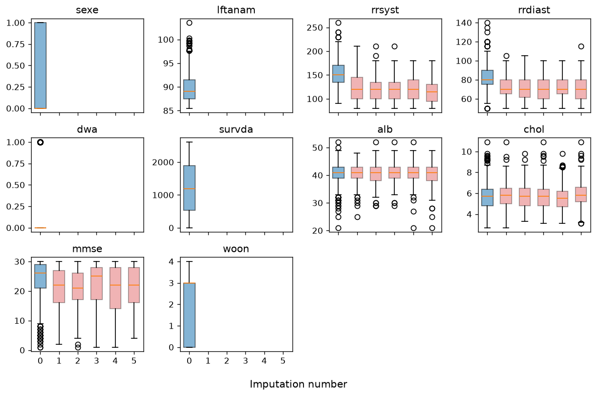
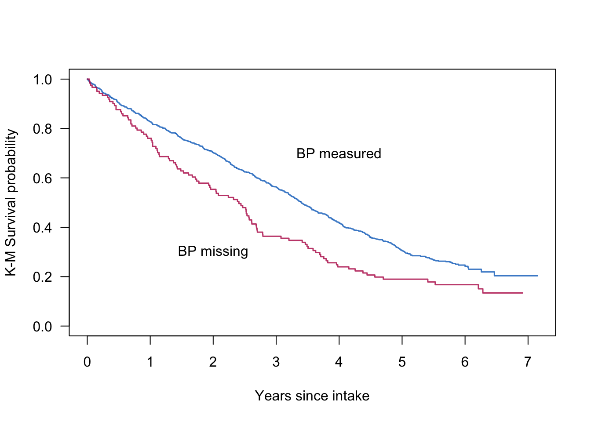
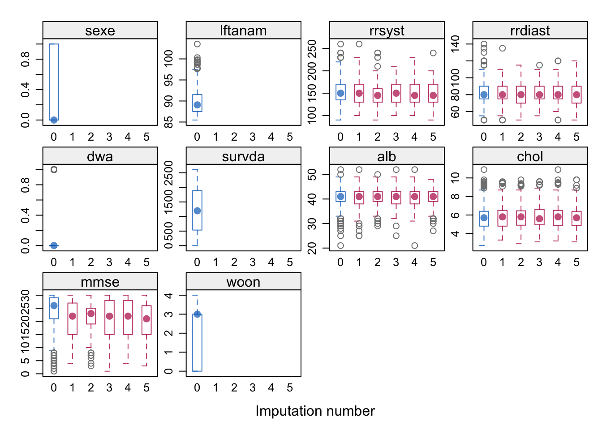
9. Density blood pressure
Note: Matplotlib equivalent of the R lattice plot.
plot_density(imp_all[0], 'rrsyst')(plot below)Compare to R reference
densityplot(imp.all[[1]], lwd = 3)Note: Matplotlib equivalent of the R lattice plot.
plot_density(imp_all[4], 'rrsyst')(plot below)Compare to R reference
densityplot(imp.all[[5]], lwd = 3)We can once more clearly see that the adjustment has an effect on the imputations for rrsyst and, thus, on those for rrdiast.
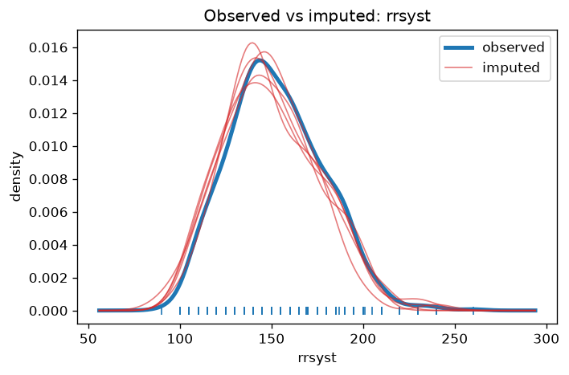
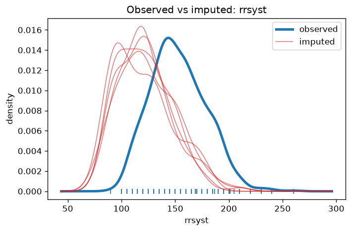
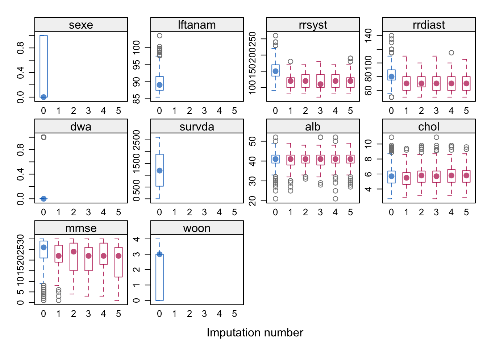
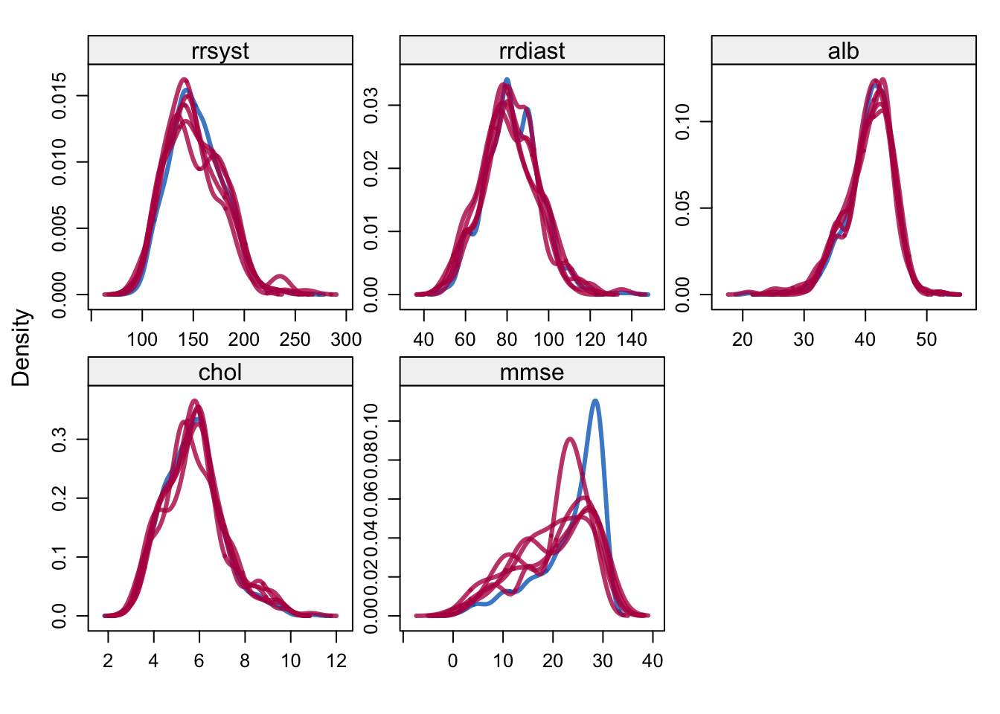
10. Scatter blood pressure
Note: Matplotlib equivalent of the R lattice plot.
plot_xy_by_imp(imp_all[0], 'rrsyst', 'rrdiast')(plot below)Compare to R reference
xyplot(imp.all[[1]], rrsyst ~ rrdiast | .imp)Note: Matplotlib equivalent of the R lattice plot.
plot_xy_by_imp(imp_all[4], 'rrsyst', 'rrdiast')(plot below)Compare to R reference
xyplot(imp.all[[5]], rrsyst ~ rrdiast | .imp)The scatter plot comparison between rrsyst and rrdiast shows us that the adjustment has an effect on the imputations and that the imputations are lower for the situation where δ = -20.
We are now going to perform a complete-data analysis. This involves several steps:
In order to automate this step we should create an expression object that performs these steps for us. The following object does so:
cda <- expression(sbpgp <- cut(rrsyst, ...), coxph(...))
See Van Buuren (2012, pp.186) for more information.
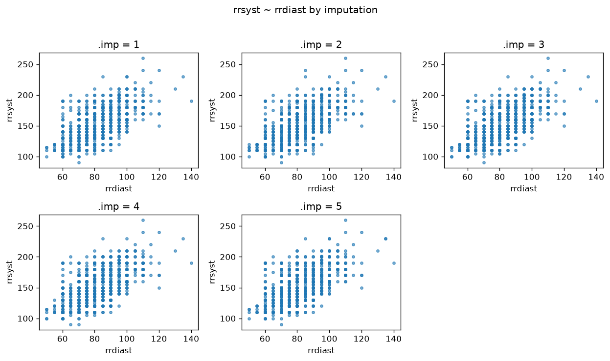
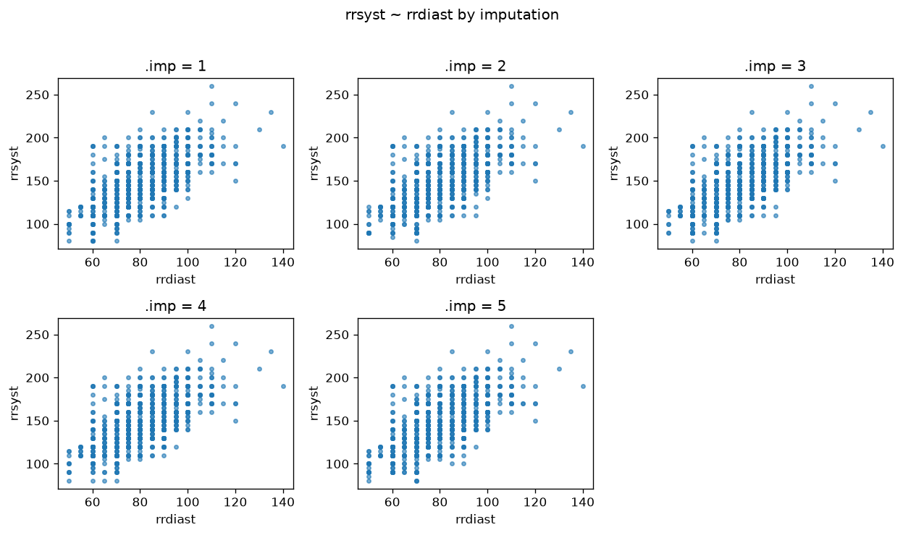
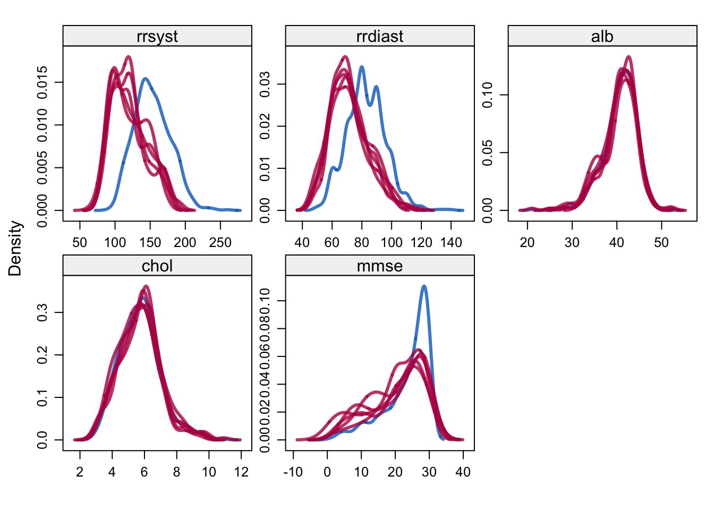
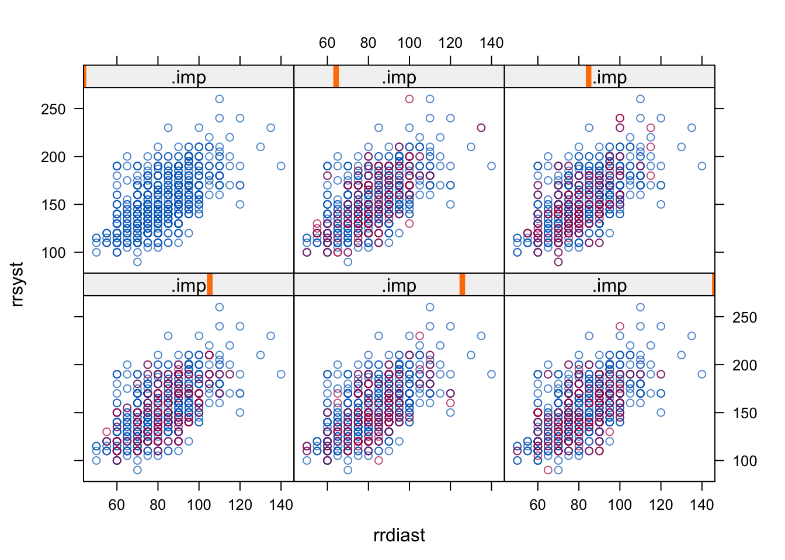
11. Survival models per scenario
R code
fit1 <- with(imp.all[[1]], cda)
fit2 <- with(imp.all[[2]], cda)
fit3 <- with(imp.all[[3]], cda)
fit4 <- with(imp.all[[4]], cda)
fit5 <- with(imp.all[[5]], cda)
fit3R output
call :
with.mids(data = imp.all[[3]], expr = cda)
call1 :
mice(data = leiden, post = post, maxit = 5, printFlag = FALSE,
seed = i)
nmis :
sexe lftanam rrsyst rrdiast dwa survda alb chol mmse
0 0 121 126 0 0 229 232 85
woon
0
analyses :
[[1]]
Call:
coxph(formula = Surv(survda, dead) ~ C(sbpgp, contr.treatment(6,
base = 3)) + strata(sexe, agegp))
coef exp(coef) se(coef) z
C(sbpgp, contr.treatment(6, base = 3))1 0.53565 1.70856 0.11709 4.575
C(sbpgp, contr.treatment(6, base = 3))2 0.39979 1.49151 0.10260 3.896
C(sbpgp, contr.treatment(6, base = 3))4 0.11222 1.11876 0.11727 0.957
C(sbpgp, contr.treatment(6, base = 3))5 0.11495 1.12182 0.14628 0.786
C(sbpgp, contr.treatment(6, base = 3))6 -0.13956 0.86974 0.28763 -0.485
p
C(sbpgp, contr.treatment(6, base = 3))1 4.77e-6
C(sbpgp, contr.treatment(6, base = 3))2 9.76e-5
C(sbpgp, contr.treatment(6, base = 3))4 0.338581
C(sbpgp, contr.treatment(6, base = 3))5 0.431953
C(sbpgp, contr.treatment(6, base = 3))6 0.627525
Likelihood ratio test=30.25 on 5 df, p=1.32e-5
n= 956, number of events= 723
[[2]]
Call:
coxph(formula = Surv(survda, dead) ~ C(sbpgp, contr.treatment(6,
base = 3)) + strata(sexe, agegp))
coef exp(coef) se(coef) z
C(sbpgp, contr.treatment(6, base = 3))1 0.47629 1.61008 0.11871 4.012
C(sbpgp, contr.treatment(6, base = 3))2 0.35318 1.42358 0.10127 3.487
C(sbpgp, contr.treatment(6, base = 3))4 0.07637 1.07936 0.11755 0.650
C(sbpgp, contr.treatment(6, base = 3))5 0.07489 1.07777 0.14472 0.518
C(sbpgp, contr.treatment(6, base = 3))6 -0.13686 0.87209 0.27758 -0.493
p
C(sbpgp, contr.treatment(6, base = 3))1 6.02e-5
C(sbpgp, contr.treatment(6, base = 3))2 0.000488
C(sbpgp, contr.treatment(6, base = 3))4 0.515888
C(sbpgp, contr.treatment(6, base = 3))5 0.604800
C(sbpgp, contr.treatment(6, base = 3))6 0.621975
Likelihood ratio test=24.59 on 5 df, p=0.000167
n= 956, number of events= 723
[[3]]
Call:
coxph(formula = Surv(survda, dead) ~ C(sbpgp, contr.treatment(6,
base = 3)) + strata(sexe, agegp))
coef exp(coef) se(coef) z
C(sbpgp, contr.treatment(6, base = 3))1 0.61947 1.85794 0.11692 5.298
C(sbpgp, contr.treatment(6, base = 3))2 0.35571 1.42720 0.10325 3.445
C(sbpgp, contr.treatment(6, base = 3))4 0.06040 1.06226 0.11834 0.510
C(sbpgp, contr.treatment(6, base = 3))5 0.11028 1.11659 0.14501 0.761
C(sbpgp, contr.treatment(6, base = 3))6 -0.15074 0.86007 0.28772 -0.524
p
C(sbpgp, contr.treatment(6, base = 3))1 1.17e-7
C(sbpgp, contr.treatment(6, base = 3))2 0.000571
C(sbpgp, contr.treatment(6, base = 3))4 0.609778
C(sbpgp, contr.treatment(6, base = 3))5 0.446954
C(sbpgp, contr.treatment(6, base = 3))6 0.600334
Likelihood ratio test=35.87 on 5 df, p=1.01e-6
n= 956, number of events= 723
[[4]]
Call:
coxph(formula = Surv(survda, dead) ~ C(sbpgp, contr.treatment(6,
base = 3)) + strata(sexe, agegp))
coef exp(coef) se(coef) z
C(sbpgp, contr.treatment(6, base = 3))1 0.52000 1.68202 0.11625 4.473
C(sbpgp, contr.treatment(6, base = 3))2 0.33831 1.40258 0.10369 3.263
C(sbpgp, contr.treatment(6, base = 3))4 0.04763 1.04879 0.11704 0.407
C(sbpgp, contr.treatment(6, base = 3))5 0.10874 1.11487 0.14579 0.746
C(sbpgp, contr.treatment(6, base = 3))6 -0.16630 0.84679 0.28780 -0.578
p
C(sbpgp, contr.treatment(6, base = 3))1 7.72e-6
C(sbpgp, contr.treatment(6, base = 3))2 0.001103
C(sbpgp, contr.treatment(6, base = 3))4 0.684023
C(sbpgp, contr.treatment(6, base = 3))5 0.455752
C(sbpgp, contr.treatment(6, base = 3))6 0.563377
Likelihood ratio test=28.19 on 5 df, p=3.34e-5
n= 956, number of events= 723
[[5]]
Call:
coxph(formula = Surv(survda, dead) ~ C(sbpgp, contr.treatment(6,
base = 3)) + strata(sexe, agegp))
coef exp(coef) se(coef) z
C(sbpgp, contr.treatment(6, base = 3))1 0.62074 1.86031 0.11484 5.405
C(sbpgp, contr.treatment(6, base = 3))2 0.38188 1.46504 0.10358 3.687
C(sbpgp, contr.treatment(6, base = 3))4 0.03305 1.03360 0.11994 0.276
C(sbpgp, contr.treatment(6, base = 3))5 0.13979 1.15003 0.14650 0.954
C(sbpgp, contr.treatment(6, base = 3))6 -0.04512 0.95588 0.26928 -0.168
p
C(sbpgp, contr.treatment(6, base = 3))1 6.47e-8
C(sbpgp, contr.treatment(6, base = 3))2 0.000227
C(sbpgp, contr.treatment(6, base = 3))4 0.782896
C(sbpgp, contr.treatment(6, base = 3))5 0.339991
C(sbpgp, contr.treatment(6, base = 3))6 0.866917
Likelihood ratio test=38.51 on 5 df, p=2.99e-7
n= 956, number of events= 723Python code
cox_fits = [with_mids(imp, expr=leiden_coxph) for imp in imp_all]
print(format_mira_cox_v06_r(fit3, nmis=imp_all[2].nmis))Console output (click to expand)
```text call : with.mids(data = imp.all[[3]], expr = cda) call1 : mice(data = leiden, post = post, maxit = 5, printFlag = FALSE, seed = i) nmis : sexe lftanam rrsyst rrdiast dwa survda alb chol mmse 0 0 121 126 0 0 229 232 85 woon 0 analyses : [[1]] Call: coxph(formula = Surv(survda, dead) ~ C(sbpgp, contr.treatment(6, base = 3)) + strata(sexe, agegp)) coef exp(coef) se(coef) z C(sbpgp, contr.treatment(6, base = 3))1 0.53565 1.70856 0.11709 4.575 C(sbpgp, contr.treatment(6, base = 3))2 0.39979 1.49151 0.10260 3.896 C(sbpgp, contr.treatment(6, base = 3))4 0.11222 1.11876 0.11727 0.957 C(sbpgp, contr.treatment(6, base = 3))5 0.11495 1.12182 0.14628 0.786 C(sbpgp, contr.treatment(6, base = 3))6 -0.13956 0.86974 0.28763 -0.485 p C(sbpgp, contr.treatment(6, base = 3))1 4.77e-6 C(sbpgp, contr.treatment(6, base = 3))2 9.76e-5 C(sbpgp, contr.treatment(6, base = 3))4 0.338581 C(sbpgp, contr.treatment(6, base = 3))5 0.431953 C(sbpgp, contr.treatment(6, base = 3))6 0.627525 Likelihood ratio test=30.25 on 5 df, p=1.32e-5 n= 956, number of events= 723 [[2]] Call: coxph(formula = Surv(survda, dead) ~ C(sbpgp, contr.treatment(6, base = 3)) + strata(sexe, agegp)) coef exp(coef) se(coef) z C(sbpgp, contr.treatment(6, base = 3))1 0.47629 1.61008 0.11871 4.012 C(sbpgp, contr.treatment(6, base = 3))2 0.35318 1.42358 0.10127 3.487 C(sbpgp, contr.treatment(6, base = 3))4 0.07637 1.07936 0.11755 0.650 C(sbpgp, contr.treatment(6, base = 3))5 0.07489 1.07777 0.14472 0.518 C(sbpgp, contr.treatment(6, base = 3))6 -0.13686 0.87209 0.27758 -0.493 p C(sbpgp, contr.treatment(6, base = 3))1 6.02e-5 C(sbpgp, contr.treatment(6, base = 3))2 0.000488 C(sbpgp, contr.treatment(6, base = 3))4 0.515888 C(sbpgp, contr.treatment(6, base = 3))5 0.604800 C(sbpgp, contr.treatment(6, base = 3))6 0.621975 Likelihood ratio test=24.59 on 5 df, p=0.000167 n= 956, number of events= 723 [[3]] Call: coxph(formula = Surv(survda, dead) ~ C(sbpgp, contr.treatment(6, base = 3)) + strata(sexe, agegp)) coef exp(coef) se(coef) z C(sbpgp, contr.treatment(6, base = 3))1 0.61947 1.85794 0.11692 5.298 C(sbpgp, contr.treatment(6, base = 3))2 0.35571 1.42720 0.10325 3.445 C(sbpgp, contr.treatment(6, base = 3))4 0.06040 1.06226 0.11834 0.510 C(sbpgp, contr.treatment(6, base = 3))5 0.11028 1.11659 0.14501 0.761 C(sbpgp, contr.treatment(6, base = 3))6 -0.15074 0.86007 0.28772 -0.524 p C(sbpgp, contr.treatment(6, base = 3))1 1.17e-7 C(sbpgp, contr.treatment(6, base = 3))2 0.000571 C(sbpgp, contr.treatment(6, base = 3))4 0.609778 C(sbpgp, contr.treatment(6, base = 3))5 0.446954 C(sbpgp, contr.treatment(6, base = 3))6 0.600334 Likelihood ratio test=35.87 on 5 df, p=1.01e-6 n= 956, number of events= 723 [[4]] Call: coxph(formula = Surv(survda, dead) ~ C(sbpgp, contr.treatment(6, base = 3)) + strata(sexe, agegp)) coef exp(coef) se(coef) z C(sbpgp, contr.treatment(6, base = 3))1 0.52000 1.68202 0.11625 4.473 C(sbpgp, contr.treatment(6, base = 3))2 0.33831 1.40258 0.10369 3.263 C(sbpgp, contr.treatment(6, base = 3))4 0.04763 1.04879 0.11704 0.407 C(sbpgp, contr.treatment(6, base = 3))5 0.10874 1.11487 0.14579 0.746 C(sbpgp, contr.treatment(6, base = 3))6 -0.16630 0.84679 0.28780 -0.578 p C(sbpgp, contr.treatment(6, base = 3))1 7.72e-6 C(sbpgp, contr.treatment(6, base = 3))2 0.001103 C(sbpgp, contr.treatment(6, base = 3))4 0.684023 C(sbpgp, contr.treatment(6, base = 3))5 0.455752 C(sbpgp, contr.treatment(6, base = 3))6 0.563377 Likelihood ratio test=28.19 on 5 df, p=3.34e-5 n= 956, number of events= 723 [[5]] Call: coxph(formula = Surv(survda, dead) ~ C(sbpgp, contr.treatment(6, base = 3)) + strata(sexe, agegp)) coef exp(coef) se(coef) z C(sbpgp, contr.treatment(6, base = 3))1 0.62074 1.86031 0.11484 5.405 C(sbpgp, contr.treatment(6, base = 3))2 0.38188 1.46504 0.10358 3.687 C(sbpgp, contr.treatment(6, base = 3))4 0.03305 1.03360 0.11994 0.276 C(sbpgp, contr.treatment(6, base = 3))5 0.13979 1.15003 0.14650 0.954 C(sbpgp, contr.treatment(6, base = 3))6 -0.04512 0.95588 0.26928 -0.168 p C(sbpgp, contr.treatment(6, base = 3))1 6.47e-8 C(sbpgp, contr.treatment(6, base = 3))2 0.000227 C(sbpgp, contr.treatment(6, base = 3))4 0.782896 C(sbpgp, contr.treatment(6, base = 3))5 0.339991 C(sbpgp, contr.treatment(6, base = 3))6 0.866917 Likelihood ratio test=38.51 on 5 df, p=2.99e-7 n= 956, number of events= 723 ```12. Pool survival models
print(format_pool_cox_summary_r(summary_pool(pool(cox_fits[0])))) estimate std.error statistic
C(sbpgp, contr.treatment(6, base = 3))1 0.51895033 0.1270346 4.0851094
C(sbpgp, contr.treatment(6, base = 3))2 0.33980541 0.1076749 3.1558451
C(sbpgp, contr.treatment(6, base = 3))4 0.07075035 0.1242191 0.5695609
C(sbpgp, contr.treatment(6, base = 3))5 0.06781265 0.1504278 0.4507987
C(sbpgp, contr.treatment(6, base = 3))6 -0.10244977 0.2836636 -0.3611664
df p.value
C(sbpgp, contr.treatment(6, base = 3))1 389.91034 5.349635853e-05
C(sbpgp, contr.treatment(6, base = 3))2 240.02343 0.00180493
C(sbpgp, contr.treatment(6, base = 3))4 177.08320 0.56969737
C(sbpgp, contr.treatment(6, base = 3))5 212.37837 0.65259454
C(sbpgp, contr.treatment(6, base = 3))6 341.52419 0.71819834Compare to R reference
r1 <- as.vector(t(exp(summary(pool(fit1))[, c(1)])))
r2 <- as.vector(t(exp(summary(pool(fit2))[, c(1)])))
r3 <- as.vector(t(exp(summary(pool(fit3))[, c(1)])))
r4 <- as.vector(t(exp(summary(pool(fit4))[, c(1)])))
r5 <- as.vector(t(exp(summary(pool(fit5))[, c(1)])))
summary(pool(fit1)) estimate std.error statistic
C(sbpgp, contr.treatment(6, base = 3))1 0.51895033 0.1270346 4.0851094
C(sbpgp, contr.treatment(6, base = 3))2 0.33980541 0.1076749 3.1558451
C(sbpgp, contr.treatment(6, base = 3))4 0.07075035 0.1242191 0.5695609
C(sbpgp, contr.treatment(6, base = 3))5 0.06781265 0.1504278 0.4507987
C(sbpgp, contr.treatment(6, base = 3))6 -0.10244977 0.2836636 -0.3611664
df p.value
C(sbpgp, contr.treatment(6, base = 3))1 389.91034 5.349635853e-05
C(sbpgp, contr.treatment(6, base = 3))2 240.02343 0.00180493
C(sbpgp, contr.treatment(6, base = 3))4 177.08320 0.56969737
C(sbpgp, contr.treatment(6, base = 3))5 212.37837 0.65259454
C(sbpgp, contr.treatment(6, base = 3))6 341.52419 0.71819834print(format_cox_pars_table_r(DELTA, cox_pars_rows)) <125 125-140 >200
0 1.68 1.40 0.90
-5 1.70 1.44 0.88
-10 1.74 1.44 0.88
-15 1.69 1.44 0.85
-20 1.76 1.45 0.88Compare to R reference
pars <- round(t(matrix(c(r1,r2,r3,r4,r5), nrow = 5)),2)
pars <- pars[, c(1, 2, 5)]
dimnames(pars) <- list(delta, c("<125", "125-140", ">200"))
pars <125 125-140 >200
0 1.68 1.40 0.90
-5 1.70 1.44 0.88
-10 1.74 1.44 0.88
-15 1.69 1.44 0.85
-20 1.76 1.45 0.88All in all, it seems that even big changes to the imputations (e.g. deducting 20 mmHg) has little influence on the results. This suggests that the results are stable relatively to this type of MNAR-mechanism.
13. Mammalsleep sensitivity
lm(sws ~ log10(bw) + odi)
for i, d in enumerate(DELTA_MS):
imp_ms = mice(ms_data, method=meth_ms, predictor_matrix=pred_ms,
post={'sws': post_add(d)}, maxit=10, seed=i*22)
qbar = pool(with_mids(imp_ms, formula='sws ~ log10(bw) + odi')).rows
print(format_delta_qbar_table(DELTA_MS, ms_delta_qbars)) delta V 1 V 2 V 3
8 13.3850 -0.1350 -1.1123
6 12.9697 -0.2547 -1.1250
4 12.4761 -0.6280 -0.9882
2 12.1851 -0.8777 -1.0337
0 11.7901 -0.9135 -0.9815
-2 11.1624 -1.4025 -0.8426
-4 10.7824 -1.6826 -0.8408
-6 10.5540 -1.8748 -0.8283
-8 10.1064 -2.1090 -0.8664Compare to R reference
delta <- c(8, 6, 4, 2, 0, -2, -4, -6, -8)
ini <- mice(mammalsleep[, -1], maxit=0, print=F)
meth["ts"] <- "~ I(sws + ps)"
for (i in 1:length(delta)) { ... mice(..., post = post, ...) }
output <- sapply(imp.all.undamped, function(x) pool(with(x, lm(sws ~ log10(bw) + odi)))$qbar)
cbind(delta, as.data.frame(t(output))) delta V 1 V 2 V 3
8 13.3850 -0.1350 -1.1123
6 12.9697 -0.2547 -1.1250
4 12.4761 -0.6280 -0.9882
2 12.1851 -0.8777 -1.0337
0 11.7901 -0.9135 -0.9815
-2 11.1624 -1.4025 -0.8426
-4 10.7824 -1.6826 -0.8408
-6 10.5540 -1.8748 -0.8283
-8 10.1064 -2.1090 -0.8664Sensitivity analysis is an important tool for investigating the plausibility of the MAR assumption. We again use the δ-adjustment technique described in Van Buuren (2012, p. 185) as an informal, simple and direct method to create imputations under nonignorable models.
Conclusion
We have seen that we can create multiple imputations in multivariate missing data problems that imitate deviations from MAR. The analysis used the post argument of the mice() function as a hook to alter the imputations just after they have been created by a univariate imputation function. The diagnostics shows that the trick works. The relative mortality estimates are however robust to this type of alteration.
- End of Vignette